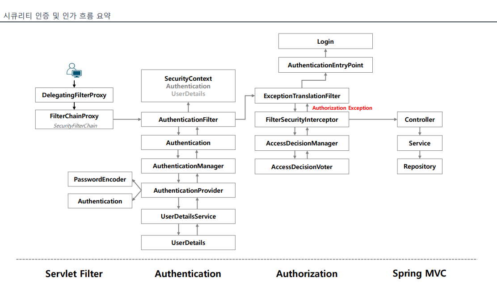

Spring Security(3) - 인증 예외시의 처리 과정
Spring Security 1편에서 스킵하고 지나간 인증 예외시 처리 과정에 대해 설명하고자 한다.
인증 - 인가 프로세스 개관
우선 기본적인 인증 - 인가 프로세스 전체에 대해 살펴보고 넘어가겠다.

username과 password를 이용하는 기본적인 인증 과정을 기준으로 설명하겠다.
- DelegatingFilterProxy를 통해 Servlet Filter에서 Spring Bean으로 등록된 Filter에게 요청 처리를 위임한다.
- 기본적으로 인증과 인가 프로세스는 접근 권한이 요구되는 자원에 접근할 때 진행된다.
AuthenticationFilter는 인증 요청을 기반으로 Authentication 객체를 생성하여 AuthenticationManager에게 처리를 위임하고,- AuthenticationManager 구현체는 자신이 지닌 AuthenticationProvider 구현체들을 순회하며 support 메서드를 통해 적절한 Provider를 찾은 뒤 인증 처리를 위임한다.
- AuthenticationProvider 구현체에서는 username과 password를 검증하고, 인증에 성공하면 유저에 관한 정보가 담긴 UserDetails 객체와 권한 정보를 인증 객체에 담아 return한다.
- 이후 인가 프로세스에서는 FilterSecurityInterceptor에서 AccessDecisionManager에게 인가 처리를 위임하고, AccessDecisionManager는 인증 정보, 요청 정보, 권한 정보를 자신이 지닌 AccessDecisionVoter에게 순회하며 전달한다.
- AccessDecisionVoter 각 구현체는 자신이 담당하는 인가 처리 기준에 따라 인가 여부를 결정한 뒤 투표 결과를 AccessDecisionManager에게 전달하고 AccessDecisionManager는 이러한 결과들과 인가 결정 전략을 기반으로 인가 여부를 결정한다.
- 인가처리까지 완료되면 최종적으로 MVC의 Controller로 요청이 전달된다.
인증 예외시 처리 프로세스
인증 예외가 발생하면 AuthenticationEntryPoint에서 이를 처리한다.
주의해야 할 점이 있다.
지금 말하는 인증 예외는 인증이 필요한 자원에 접근한 요청이 인증되지 않은 사용자의 요청일 경우를 말하며, 로그인 과정에서 비밀번호 불일치와 같은 예외의 경우에는 Handler에서 처리. 전자의 경우에는 ExceptionTranslationFilter에서 EntryPoint의 commence 메서드를 호출하며, 후자의 경우에는 해당 인증과정을 처리하던 필터에서 failureHandler의 메서드를 호출하는 것에서 확인할 수 있다.

인증 방식에 따라 각각 다른 EntryPoint가 지정되는데, ExceptionHandlingConfigurer가 이 설정을 관장한다.
ExceptionHandlingConfigurer는 내부에 LinkedHashMap 형태로 entrypoint 객체를 담아둔다.
- CustomEntryPoint가 있는 경우
- Custom한 AuthenticationEntryPoint에 의한 인증 예외 처리가 가장 우선시된다
- Custom한 AuthenticationEntryPoint에 의한 인증 예외 처리가 가장 우선시된다
- CustomEntryPoint가 없는 경우
- defaultEntryPointMappings라는 LinkedHashMap에 저장되어있는 EntryPoint가 없을 경우
- Http403ForbiddenEntryPoint가 처리한다
- defaultEntryPointMappings라는 LinkedHashMap에 저장되어있는 EntryPoint가 있는 경우
- 하나만 있다면 바로 그 EntryPoint 객체가 처리하게 되며, 그게 아닐 경우는 DelegatingAuthenticationEntryPoint에 의해 내부적으로 어떤 인증방식인지 판별한 뒤 적절한 EntryPoint를 ExceptionTranslationFilter에게 넘겨주고 예외 처리가 동작하게 된다.
- defaultEntryPointMappings라는 LinkedHashMap에 저장되어있는 EntryPoint가 없을 경우